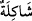
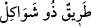
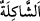

olanı yapar. ‘
’ kelimesi ‘
’ sözünde olduğu gibi ana yoldan ayrılan diğer
yollar anlamındadır. el-Kâmûs’ta der ki: “
” şekil, taraf, niyet, yol ve mezheb
demektir.”
“Bu durumda kimin doğru” daha isâbetli ve açık “bir yol tuttuğunu” sizi böyle
farklı tabiatlarda yaratan “Rabbiniz en iyi bilendir.” Yâni Allah doğru yolda olanı
sapıtmış olandan ayırır ve her birini kendi ameline göre mükâfâtlandırır. Bu âyette
amellerin insanların hâllerine delâlet ettiğine işâret vardır.
Mesnevî’de şöyle der:
Yerde şeker kamışı mı bitmiş, yoksa alelâde kamış mı...
Her biten ot, bittiği yerin hâlini, kabiliyetini bildirir!
Bu sebeple kendisini iyilik, itâat, şükür içerisinde bulan Allah’a çokça hamd etsin.
Kendisini kötülük, fısk ve küfrân-ı nimet içerisinde bulan ise iş elinden çıkmadan
Allah’a dönsün.
Hikâye edilir ki debdebeli bir saltanatın, geniş bir ülkenin ve zengin bir hazinenin
sâhibi bir hükümdar, çeşit çeşit yiyecek ve içeceklerle bir ziyâfet hazırlattı ve tüm
idârecilerini bu ziyâfete dâvet etti.
Tam yemek başladığı sırada bir adam, kralın tahtını sarsacak bir şekilde hızla kapıyı
çalmaya başladı. Hizmetçiler ona:
“Bu ne hırs! Ne edepsiz bir davranış ey fakir! Yemeklerimizi yiyip senin de karnını
doyuruncaya kadar sabret.” dediler.
Adam: “Benim sizin yemeğinize ihtiyacım yok. Ben hükümdarı görmek istiyorum”
diye karşılık verdi.
Hizmetçiler: “Senin hükümdarla ne işin olur ki?” dediler. Bu defa adam daha hızlı bir
şekilde kapıya vurmaya başladı. Bunun üzerine ellerinde silahlarla ona hücum ettiler.
Adam: “Yerinizde durun. Ben ölüm meleğiyim. Fenâ âleminin hükümdarının rûhunu
kabzetmeye geldim” deyince hepsi oldukları yerde kalıp hareket edemediler. Hükümdar
bir miktar süre istemişse de o buna razı olmadı. Bunun üzerine hükümdar:
“Allah mala lânet etsin. Zira o beni aldattı. İşte bugün eli boş bir halde bu dünyayı
terk ediyorum. Mallarımın faydası düşmanlara, hesâbı ve azâbı ise bana kaldı” diyerek
hayıflandı.
Allah Teâlâ mala konuşma kâbiliyeti verdi ve o da: “Bana değil kendine lânet et.
Çünkü ben senin hizmetine âmâde edildim ve sen de istediğini yapma kabiliyetine
sahiptin. Şimdi bile alışık olduğun zulmü terk etmiş değilsin. Suçlu sen olmana rağmen
mâsûm olana küfredip duruyorsun.” dedi.